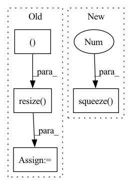

Pattern ID :6082

Before Change
// Load a image
img_file = os.path.join(self.data_dir, "JPEGImages", id_ + ".jpg")
img = np.asarray(Image.open(img_file), dtype=np.float32).transpose((2, 0, 1))
img = img / 255.
// img = self.ToTensor(Image.open(img_file)) // 自带归一化
in_c, in_h, in_w = img.shape
// preprocess img 缩放到最小比例,这样最终长和宽都能放缩到规定的尺寸
scale1 = 600 / min(in_h, in_w)
scale2 = 1000 / max(in_h, in_w)
scale = min(scale1, scale2)
// resize到最小比例,anti_aliasing为是否采用高斯滤波 使用sk-learn的方式来resize
out_h, out_w = in_h * scale, in_w * scale
img = sktsf.resize(img, (in_c, out_h, out_w), mode="reflect", anti_aliasing=False) // np.float64
img = self.normalize(torch.from_numpy(img)).numpy()
// img = F.interpolate(img.unsqueeze(0), size=(round(out_h), round(out_w)), mode="nearest").squeeze(0)
// img = F.interpolate(img.unsqueeze(0), size=(round(out_h), round(out_w)), mode="bilinear",align_corners=True).squeeze(0)
After Change
scale2 = self.max_size / max(in_h, in_w)
scale = min(scale1, scale2)
out_h, out_w = round(in_h * scale), round(in_w * scale)
img = F.interpolate(img.unsqueeze(0), size=(out_h, out_w), mode="bilinear",align_corners=True).squeeze(0)
img = self.normalize(img).numpy()
if self.is_train:
box *= scale
// 需要将后续返回的img替换为img.copy()
In pattern: SUPERPATTERN
Frequency: 3
Non-data size: 4
Instances
Fragment ID: 21076454
Project Name: pangkun248/faster-rcnn-pytorch
Commit Name: 9f846e1554bc021a8736389744969d0dd7f97321
Time: 2021-08-30
Author: 39581901+pangkun248@users.noreply.github.com
File Name: dataset.py
M Class Name: ListDataset
N Class Name: ListDataset
M Method Name: __getitem__(2)
N Method Name: __getitem__(2)
M Parent Class: Dataset
N Parent Class: Dataset
M File Name: dataset.py
N File Name: dataset.py
M Start Line: 47
M End Line: 67
N Start Line: 43
N End Line: 59
'>
Before Change
scale2 = 1000 / max(in_h, in_w)
scale = min(scale1, scale2)
out_h, out_w = in_h * scale, in_w * scale
img = sktsf.resize(img, (in_c, out_h, out_w), mode="reflect", anti_aliasing=False) // np.float64
img = self.normalize(torch.from_numpy(img)).numpy()
// img = F.interpolate(img.unsqueeze(0), size=(round(in_h * scale), round(in_w * scale)), mode="nearest").squeeze(0)
// img = tvtsf.Normalize(mean=[0.485, 0.456, 0.406], std=[0.229, 0.224, 0.225])(img)
return img_path, img, img.shape[1:]
After Change
scale1 = 600 / min(in_h, in_w)
scale2 = 1000 / max(in_h, in_w)
scale = min(scale1, scale2)
img = F.interpolate(img.unsqueeze(0), size=(round(in_h * scale), round(in_w * scale)), mode="nearest").squeeze(0)
img = tvtsf.Normalize(mean=[0.485, 0.456, 0.406], std=[0.229, 0.224, 0.225])(img)
return img_path, img, img.shape[1:]
def __len__(self):
'>
Fragment ID: 21076443
Project Name: pangkun248/faster-rcnn-pytorch
Commit Name: 9f846e1554bc021a8736389744969d0dd7f97321
Time: 2021-08-30
Author: 39581901+pangkun248@users.noreply.github.com
File Name: dataset.py
M Class Name: ImageFolder
N Class Name: ImageFolder
M Method Name: __getitem__(2)
N Method Name: __getitem__(2)
M Parent Class: Dataset
N Parent Class: Dataset
M File Name: dataset.py
N File Name: dataset.py
M Start Line: 110
M End Line: 119
N Start Line: 91
N End Line: 99
'>
Before Change
// rgb_img = img_tensor.squeeze(0).permute(1, 2, 0).cpu().numpy() // [1,C,H,W]->[H,W,C]
bgr_img = cv2.imread(img_path, 1)
bgr_img = cv2.resize(bgr_img, (224, 224), interpolation=cv2.INTER_CUBIC)
bgr_img = np.float32(bgr_img) / 255 // 归一化
with GradCAM(model=model, target_layers=target_layers) as cam:
cam.batch_size = 32
After Change
t_std = torch.FloatTensor((0.229, 0.224, 0.225)).view(3, 1, 1).expand(3, 224, 224)
// 1. [B,C,H,W]->[C,H,W] 2. 反归一化
rgb_img = img_tensor.cpu().squeeze(0) * t_std + t_mean
// 1. RGB->BGR 2. [C,H,W] -> [H,W,C]
bgr_img = rgb_img[[2, 1, 0], :, :].permute(1, 2, 0).numpy()
'>
Fragment ID: 21076447
Project Name: bobo0810/classification
Commit Name: 1836c97e5c32c77787b9748173377cbabfa908dc
Time: 2022-03-30
Author: lipengbo@kanzhun.com
File Name: Utils/tools.py
M Class Name: AnonimousClass
N Class Name: AnonimousClass
M Method Name: vis_cam(4)
N Method Name: vis_cam(4)
M Parent Class:
N Parent Class:
M File Name: Utils/tools.py
N File Name: Utils/tools.py
M Start Line: 105
M End Line: 120
N Start Line: 130
N End Line: 161